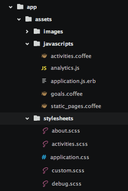

By Benoit (Summer2) / @benoitvallon
Demo
rails new myProject // create a new projectrails server // launch a web server on localhostrails controller myController // create a the files and project struture for your controller
class Goal < ActiveRecord::Base
belongs_to :user
validates :user_id, presence: true
validates :title, presence: true, length: { maximum: 140 }
validates :start_date, presence: true
has_many :activities, dependent: :destroy
end

gem 'devise', '~> 3.5.1'
gem 'momentjs-rails'
gem 'bootstrap3-datetimepicker-rails'
gem 'font-awesome-sass'